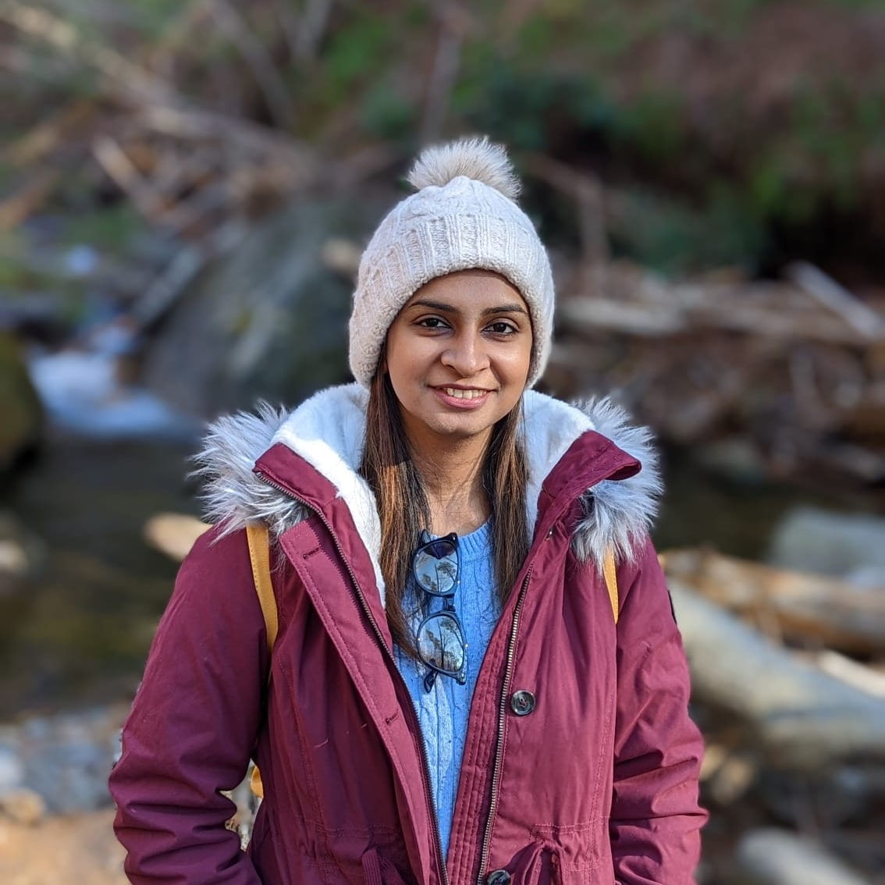

Education
PhD, Department of Computer Science Fall 2018 - Present
Florida State University, Tallahassee, GPA 3.85
Bachelor of Technology, Information Technology Aug. 2010 -- Jun. 2014
Maulana Abul Kalam Azad University of Technology, Kolkata, India, GPA 8.43/10
Research Experience
Graduate Research Assistant, PI: Dr. Xian Mallory May 2021 - Present
- Developed a computational tool scLongTree that can tell how cancer cells evolve given the single cell DNA sequencing data at different time.
Such a study is essential in learning how cancer cells gain new mutations and the interplay of different mutations.
- Benchmarked available clustering tools for single cell DNA sequencing data which lead to a manuscript published in PLOS Computational Biology journal.
Such a benchmarking paper will facilitate better research velocity in the clustering of single cell DNA sequencing data.
- Worked on a pipeline utilizing existing bioinformatics tools to detect mutations, filter the mutations against dbSNP and 1000g, detect fusion genes,
and infer HLA binding prediction of a diabetic patient using single cell RNA sequencing data.
This project helped me get acquainted with various bioinformatics tools and understand how to analyze single cell RNA sequencing data.
- Working on reviewing available eQTL detection methods for single cell RNA sequencing data and mentoring an undergraduate student for this project.
This will lead to a review paper which will help in better understanding of the application of available eQTL tools on single cell RNA sequencing data.
Graduate Research Assistant, PI: Dr. Michael Gubanov Sep 2018 - April 2021
- Analyzed large scale structured data available from millions of sources in the web and developed models using Machine learning and deep learning to
summarize the metadata of specific real world objects resulting in a research paper presented at CIKM'20.
Other work experiences
Solo Course Instructor for Advanced Programming With Java at FSU May - August 2023
- Delivered lectures, designed assignments and exams, proctored exams for 36 students.
Lead Teaching Assistant for Bioinformatics at FSU Fall 2022 and Fall 2023
- Responsible for grading, holding office hours, and communicating with students facing issues related to grading or assignments.
Lead Web Developer in Wipro Technologies, Bangalore, India Dec 2014 - May 2018
- Worked as a web developer using Java Spring and Hibernate frameworks, Javascript, JUnit and Agile methodologies. I also mentored new joinees in our team.
Teacher Volunteer for NGO Bhumi, Bangalore, India Nov 2017 - May 2018
- Taught arts and crafts to underpriviledged students.
Technical Skills
Programming Languages
- Java (Spring and Hibernate, JavaScript, JUnit), Python ( Scikit-learn, NumPy, SciPy, Pandas, Matplotlib, Pydot, Tensorflow, Keras), Bash, SQL, Spark/SparkML, R
Bioinformatics computational tools:
- samtools, GATK, bedtools, STAR, Bowtie, Bowtie2, Ensembl VEP, RSEM, TopHat Fusion, Annovar, netMHC I and II, IGV, SCITE, SiCloneFit, BnpC, SBMClone, SiFit, SCG, SCClone, RobustClone, LACE, CALDER.
Linux skills:
- Experienced in Slurm and HPC.
Data Analysis and Statistics Tools and Frameworks:
- Simulations, Bayesian Methods, Clustering, Sampling Methods, Machine Learning (Decision Trees, Random Forests, Naive Bayes Classifiers,
Linear and Logistic Regression, Support Vector Machine, Principal Component Analysis, K-means, K-Nearest Neighbors, Neural Networks, Ensemble Models), Deep Learning (CNN, RNN, LSTM, Transformer), Git
Sequencing data:
- Whole-genome shotgun sequencing (WGSS) DNA, single cell DNA from Next-generation sequencing, Fluidigm C1 single-cell RNA sequencing using HiSeq

About myself
I am a Computer Science PhD candidate at Florida State University working under the esteemed guidance of Dr. Xian Mallory (Her webpage).
My research focuses on studying and developing novel computational tools for large biological data sets
using statistical inference and Machine Learning that can help understand biological processes such as cancer.
I am looking for summer 2024 internship opportunities as a Bioinformatician or Computational Biologist and my expected Graduation is Fall 2024.
Selected Publications, Preprints and Manuscripts
Tags
Computational Biology Machine Learning Bioinformatics
Single cells Cancer research Genomics